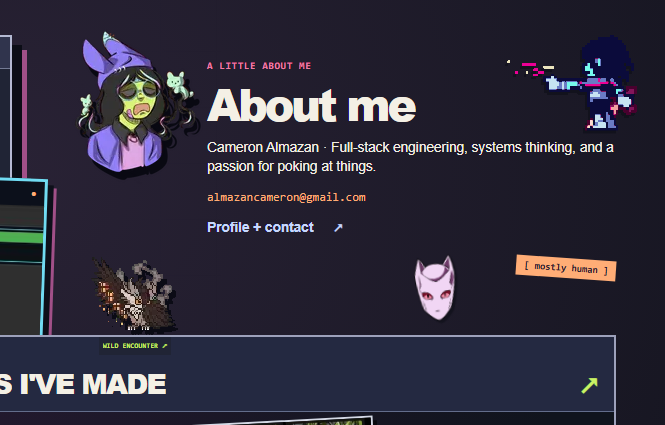
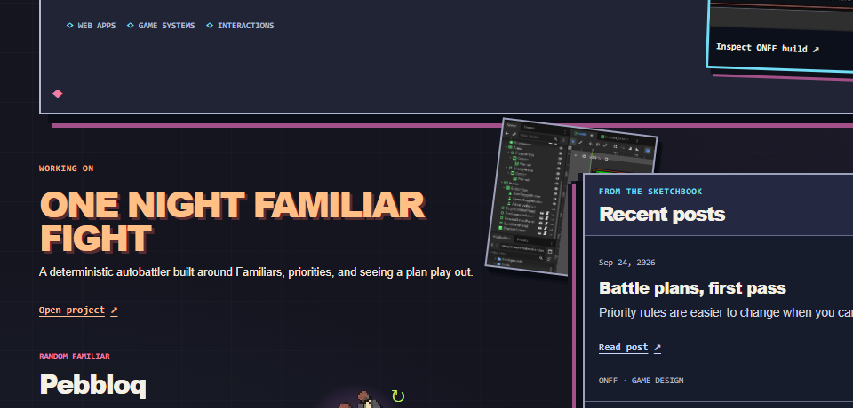
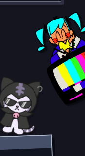
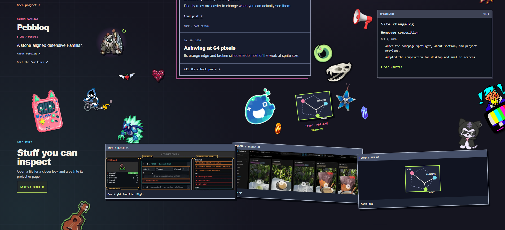

18 supplied assets and one Godot process image. Noise and most incidental pickups are reserved for the later random layer. These comps use the actual assets over the unchanged production homepage; they are planning artifacts.
Frames hide tucked objects in the previews. PNG captures freeze animated assets; live positioning and behavior will be checked during implementation. Requested capture widths include a 15px scrollbar reduction. The rainbow alternative replaces only the narwhal.

C: an inward gesture without a sticker covering the avatar.

D: actual development material beside the ONFF work.

B: Miku occupies open space below the changelog; the source's existing tilt makes her look around the edge.

E–I: separate pockets leave breathing room for the later random layer.